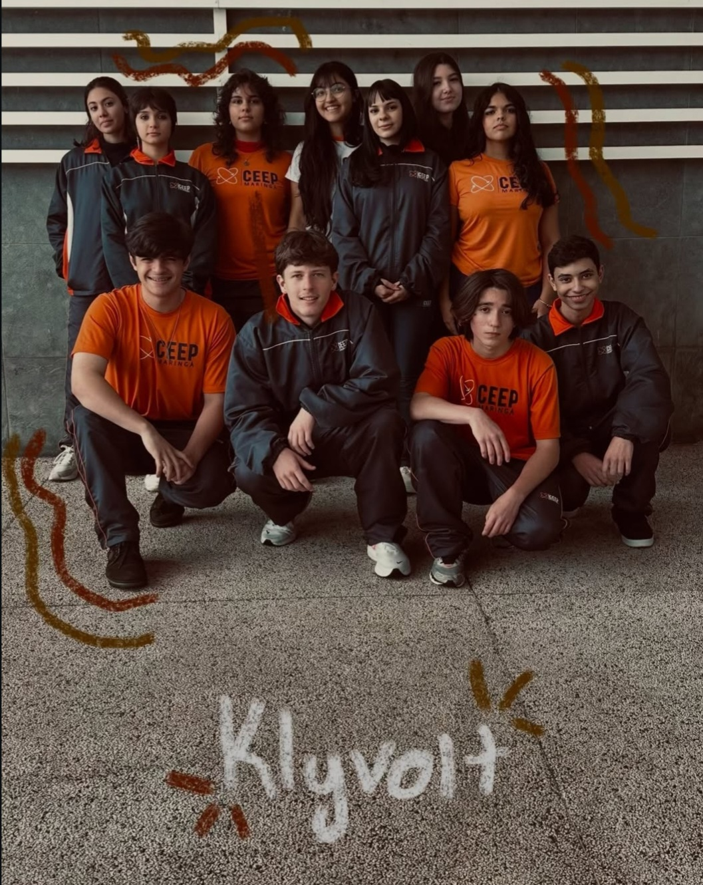

O problema que ninguém vê
Uma máquina gasta mais do que deveria e ninguém percebe. Só a conta alta mostra o problema.
Energia que vira decisão.
Uma máquina gasta mais do que deveria e ninguém percebe. Só a conta alta mostra o problema.
Mães de integrantes do grupo trabalham em confecções e sofrem com o gasto de energia. Dali nasceu o projeto.
Transformar o consumo de cada máquina em informação, para decidir a tempo.
